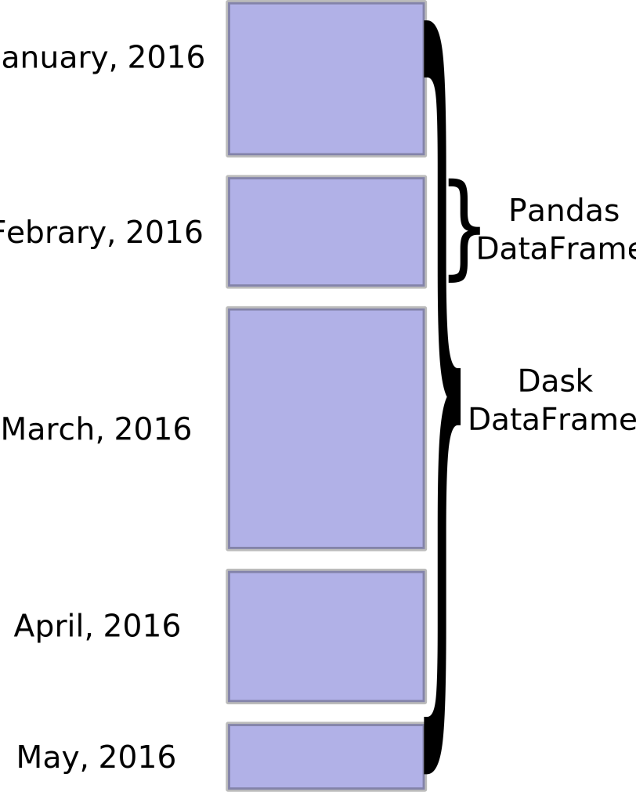

# Copyright 2021 NVIDIA Corporation. All Rights Reserved.
#
# Licensed under the Apache License, Version 2.0 (the "License");
# you may not use this file except in compliance with the License.
# You may obtain a copy of the License at
#
# http://www.apache.org/licenses/LICENSE-2.0
#
# Unless required by applicable law or agreed to in writing, software
# distributed under the License is distributed on an "AS IS" BASIS,
# WITHOUT WARRANTIES OR CONDITIONS OF ANY KIND, either express or implied.
# See the License for the specific language governing permissions and
# limitations under the License.
# ==============================================================================
Scaling Criteo: ETL with NVTabular
Overview
NVTabular is a feature engineering and preprocessing library for tabular data designed to quickly and easily manipulate terabyte scale datasets used to train deep learning based recommender systems. It provides a high level abstraction to simplify code and accelerates computation on the GPU using the RAPIDS cuDF library.
In this notebook, we will show how to scale NVTabular to multi-GPUs and multiple nodes. Prerequisite is to be familiar with NVTabular and its API. You can read more NVTabular and its API in our Getting Started with Movielens notebooks.
The full Criteo 1TB Click Logs dataset contains ~1.3 TB of uncompressed click logs containing over four billion samples spanning 24 days. In our benchmarks, we are able to preprocess and engineer features in 13.8min with 1x NVIDIA A100 GPU and 1.9min with 8x NVIDIA A100 GPUs. This is a speed-up of 100x-10000x in comparison to different CPU versions, You can read more in our blog.
Our pipeline will be representative with most common preprocessing transformation for deep learning recommender models.
Categorical input features are
Categorifiedto be continuous integers (0, …, |C|) for the embedding layersMissing values of continuous input features are filled with 0. Afterwards the continuous features are clipped and normalized.
Learning objectives
In this notebook, we learn how to to scale ETLs with NVTabular
Learn to use larger than GPU/host memory datasets
Use multi-GPU or multi node for ETL
Apply common deep learning ETL workflow
Multi-GPU and multi-node scaling
NVTabular is built on top off RAPIDS.AI cuDF, dask_cudf and dask.
Dask is a task-based library for parallel scheduling and execution. Although it is certainly possible to use the task-scheduling machinery directly to implement customized parallel workflows (we do it in NVTabular), most users only interact with Dask through a Dask Collection API. The most popular “collection” API’s include:
Dask DataFrame: Dask-based version of the Pandas DataFrame/Series API. Note that dask_cudf is just a wrapper around this collection module (dask.dataframe).
Dask Array: Dask-based version of the NumPy array API
Dask Bag: Similar to a Dask-based version of PyToolz or a Pythonic version of PySpark RDD
For example, Dask DataFrame provides a convenient API for decomposing large Pandas (or cuDF) DataFrame/Series objects into a collection of DataFrame partitions.
{kind=link}
We use dask_cudf to process large datasets as a collection of cuDF dataframes instead of Pandas. CuDF is a GPU DataFrame library for loading, joining, aggregating, filtering, and otherwise manipulating data.
Dask enables easily to schedule tasks for multiple workers: multi-GPU or multi-node. We just need to initialize a Dask cluster (LocalCUDACluster) and NVTabular will use the cluster to execute the workflow.
ETL with NVTabular
Here we’ll show how to use NVTabular first as a preprocessing library to prepare the Criteo 1TB Click Logs dataset dataset. The following notebooks can use the output to train a deep learning model.
Data Prep
The previous notebook 01-Download-Convert converted the tsv data published by Criteo into the parquet format that our accelerated readers prefer. Accelerating these pipelines on new hardware like GPUs may require us to make new choices about the representations we use to store that data, and parquet represents a strong alternative.
We load the required libraries.
# Standard Libraries
import os
import re
import shutil
import warnings
# External Dependencies
import numpy as np
import numba
from dask_cuda import LocalCUDACluster
from dask.distributed import Client
# NVTabular
import nvtabular as nvt
from nvtabular.ops import (
Categorify,
Clip,
FillMissing,
Normalize,
)
from nvtabular.utils import pynvml_mem_size, device_mem_size
Once our data is ready, we’ll define some high level parameters to describe where our data is and what it “looks like” at a high level.
# define some information about where to get our data
BASE_DIR = os.environ.get("BASE_DIR", "/raid/data/criteo")
INPUT_DATA_DIR = os.environ.get("INPUT_DATA_DIR", BASE_DIR + "/converted/criteo")
OUTPUT_DATA_DIR = os.environ.get("OUTPUT_DATA_DIR", BASE_DIR + "/test_dask/output")
stats_path = os.path.join(OUTPUT_DATA_DIR, "test_dask/stats")
dask_workdir = os.path.join(OUTPUT_DATA_DIR, "test_dask/workdir")
# Make sure we have a clean worker space for Dask
if os.path.isdir(dask_workdir):
shutil.rmtree(dask_workdir)
os.makedirs(dask_workdir)
# Make sure we have a clean stats space for Dask
if os.path.isdir(stats_path):
shutil.rmtree(stats_path)
os.mkdir(stats_path)
# Make sure we have a clean output path
if os.path.isdir(OUTPUT_DATA_DIR):
shutil.rmtree(OUTPUT_DATA_DIR)
os.mkdir(OUTPUT_DATA_DIR)
We use the last day as validation dataset and the remaining days as training dataset.
fname = "day_{}.parquet"
num_days = len(
[i for i in os.listdir(INPUT_DATA_DIR) if re.match(fname.format("[0-9]{1,2}"), i) is not None]
)
train_paths = [os.path.join(INPUT_DATA_DIR, fname.format(day)) for day in range(num_days - 1)]
valid_paths = [
os.path.join(INPUT_DATA_DIR, fname.format(day)) for day in range(num_days - 1, num_days)
]
print(train_paths)
print(valid_paths)
['/raid/criteo/tests/crit_int_pq/day_0.parquet', '/raid/criteo/tests/crit_int_pq/day_1.parquet', '/raid/criteo/tests/crit_int_pq/day_2.parquet', '/raid/criteo/tests/crit_int_pq/day_3.parquet', '/raid/criteo/tests/crit_int_pq/day_4.parquet', '/raid/criteo/tests/crit_int_pq/day_5.parquet', '/raid/criteo/tests/crit_int_pq/day_6.parquet', '/raid/criteo/tests/crit_int_pq/day_7.parquet', '/raid/criteo/tests/crit_int_pq/day_8.parquet', '/raid/criteo/tests/crit_int_pq/day_9.parquet', '/raid/criteo/tests/crit_int_pq/day_10.parquet', '/raid/criteo/tests/crit_int_pq/day_11.parquet', '/raid/criteo/tests/crit_int_pq/day_12.parquet', '/raid/criteo/tests/crit_int_pq/day_13.parquet', '/raid/criteo/tests/crit_int_pq/day_14.parquet', '/raid/criteo/tests/crit_int_pq/day_15.parquet', '/raid/criteo/tests/crit_int_pq/day_16.parquet', '/raid/criteo/tests/crit_int_pq/day_17.parquet', '/raid/criteo/tests/crit_int_pq/day_18.parquet', '/raid/criteo/tests/crit_int_pq/day_19.parquet', '/raid/criteo/tests/crit_int_pq/day_20.parquet', '/raid/criteo/tests/crit_int_pq/day_21.parquet', '/raid/criteo/tests/crit_int_pq/day_22.parquet']
['/raid/criteo/tests/crit_int_pq/day_23.parquet']
Deploy a Distributed-Dask Cluster
Now we configure and deploy a Dask Cluster. Please, read this document to know how to set the parameters.
# Dask dashboard
dashboard_port = "8787"
# Deploy a Single-Machine Multi-GPU Cluster
protocol = "tcp" # "tcp" or "ucx"
if numba.cuda.is_available():
NUM_GPUS = list(range(len(numba.cuda.gpus)))
else:
NUM_GPUS = []
visible_devices = ",".join([str(n) for n in NUM_GPUS]) # Delect devices to place workers
device_limit_frac = 0.7 # Spill GPU-Worker memory to host at this limit.
device_pool_frac = 0.8
part_mem_frac = 0.15
# Use total device size to calculate args.device_limit_frac
device_size = device_mem_size(kind="total")
device_limit = int(device_limit_frac * device_size)
device_pool_size = int(device_pool_frac * device_size)
part_size = int(part_mem_frac * device_size)
# Check if any device memory is already occupied
for dev in visible_devices.split(","):
fmem = pynvml_mem_size(kind="free", index=int(dev))
used = (device_size - fmem) / 1e9
if used > 1.0:
warnings.warn(f"BEWARE - {used} GB is already occupied on device {int(dev)}!")
cluster = None # (Optional) Specify existing scheduler port
if cluster is None:
cluster = LocalCUDACluster(
protocol=protocol,
n_workers=len(visible_devices.split(",")),
CUDA_VISIBLE_DEVICES=visible_devices,
device_memory_limit=device_limit,
local_directory=dask_workdir,
dashboard_address=":" + dashboard_port,
rmm_pool_size=(device_pool_size // 256) * 256
)
# Create the distributed client
client = Client(cluster)
client
Client
|
Cluster
|
That’s it. We initialized our Dask cluster and NVTabular will execute the workflow on multiple GPUs. Similar, we could define a cluster with multiple nodes.
Defining our Preprocessing Pipeline
At this point, our data still isn’t in a form that’s ideal for consumption by neural networks. The most pressing issues are missing values and the fact that our categorical variables are still represented by random, discrete identifiers, and need to be transformed into contiguous indices that can be leveraged by a learned embedding. Less pressing, but still important for learning dynamics, are the distributions of our continuous variables, which are distributed across multiple orders of magnitude and are uncentered (i.e. E[x] != 0).
We can fix these issues in a conscise and GPU-accelerated manner with an NVTabular Workflow. We explained the NVTabular API in Getting Started with Movielens notebooks and hope you are familiar with the syntax.
Frequency Thresholding
One interesting thing worth pointing out is that we’re using frequency thresholding in our Categorify op. This handy functionality will map all categories which occur in the dataset with some threshold level of infrequency (which we’ve set here to be 15 occurrences throughout the dataset) to the same index, keeping the model from overfitting to sparse signals.
# define our dataset schema
CONTINUOUS_COLUMNS = ["I" + str(x) for x in range(1, 14)]
CATEGORICAL_COLUMNS = ["C" + str(x) for x in range(1, 27)]
LABEL_COLUMNS = ["label"]
COLUMNS = CONTINUOUS_COLUMNS + CATEGORICAL_COLUMNS + LABEL_COLUMNS
num_buckets = 10000000
categorify_op = Categorify(out_path=stats_path, max_size=num_buckets)
cat_features = CATEGORICAL_COLUMNS >> categorify_op
cont_features = CONTINUOUS_COLUMNS >> FillMissing() >> Clip(min_value=0) >> Normalize()
features = cat_features + cont_features + LABEL_COLUMNS
workflow = nvt.Workflow(features)
Now instantiate dataset iterators to loop through our dataset (which we couldn’t fit into GPU memory). We need to enforce the required HugeCTR data types, so we set them in a dictionary and give as an argument when creating our dataset.
dict_dtypes = {}
for col in CATEGORICAL_COLUMNS:
dict_dtypes[col] = np.int64
for col in CONTINUOUS_COLUMNS:
dict_dtypes[col] = np.float32
for col in LABEL_COLUMNS:
dict_dtypes[col] = np.float32
train_dataset = nvt.Dataset(train_paths, engine="parquet", part_size=part_size)
valid_dataset = nvt.Dataset(valid_paths, engine="parquet", part_size=part_size)
Now run them through our workflows to collect statistics on the train set, then transform and save to parquet files.
output_train_dir = os.path.join(OUTPUT_DATA_DIR, "train/")
output_valid_dir = os.path.join(OUTPUT_DATA_DIR, "valid/")
! mkdir -p $output_train_dir
! mkdir -p $output_valid_dir
For reference, let’s time it to see how long it takes…
%%time
workflow.fit(train_dataset)
CPU times: user 18.6 s, sys: 2.24 s, total: 20.8 s
Wall time: 1min 5s
%%time
# Add "write_hugectr_keyset=True" to "to_parquet" if using this ETL Notebook for training with HugeCTR
workflow.transform(train_dataset).to_parquet(
output_files=len(NUM_GPUS),
output_path=output_train_dir,
shuffle=nvt.io.Shuffle.PER_PARTITION,
dtypes=dict_dtypes,
cats=CATEGORICAL_COLUMNS,
conts=CONTINUOUS_COLUMNS,
labels=LABEL_COLUMNS,
)
CPU times: user 4.76 s, sys: 2.3 s, total: 7.06 s
Wall time: 1min 59s
%%time
# Add "write_hugectr_keyset=True" to "to_parquet" if using this ETL Notebook for training with HugeCTR
workflow.transform(valid_dataset).to_parquet(
output_path=output_valid_dir,
dtypes=dict_dtypes,
cats=CATEGORICAL_COLUMNS,
conts=CONTINUOUS_COLUMNS,
labels=LABEL_COLUMNS,
)
CPU times: user 436 ms, sys: 140 ms, total: 576 ms
Wall time: 5.17 s
In the next notebooks, we will train a deep learning model. Our training pipeline requires information about the data schema to define the neural network architecture. We will save the NVTabular workflow to disk so that we can restore it in the next notebooks.
workflow.save(os.path.join(OUTPUT_DATA_DIR, "workflow"))